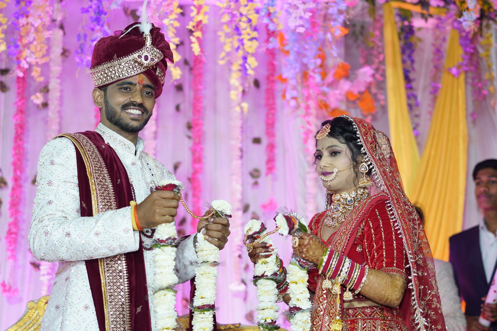
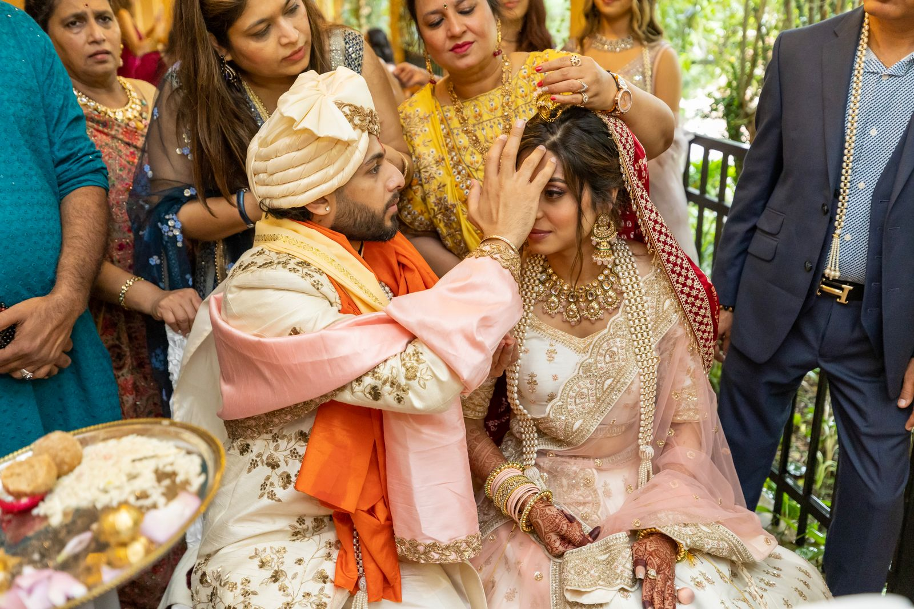
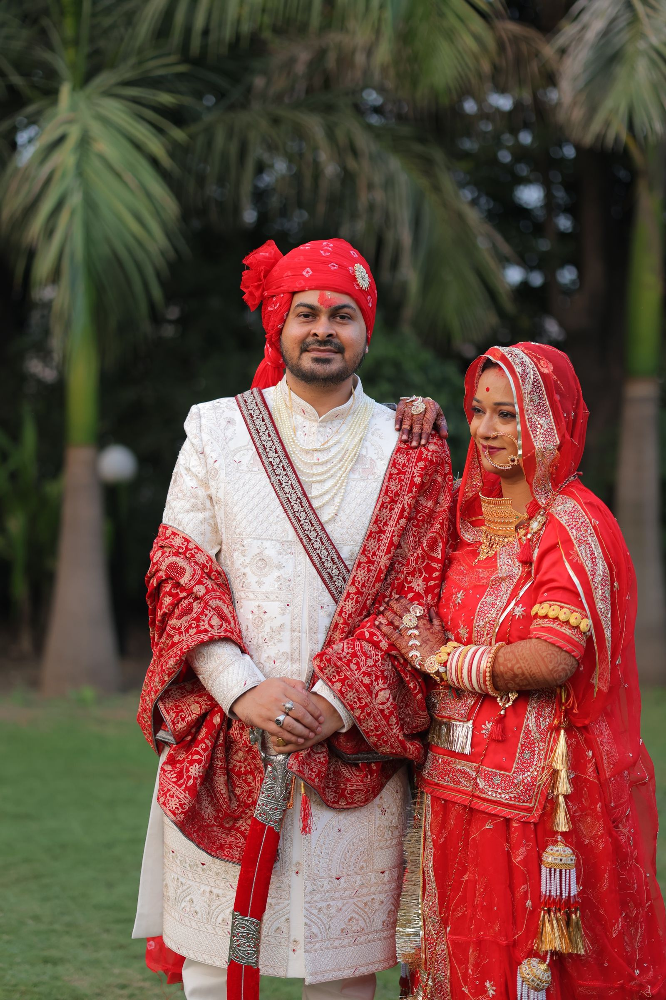
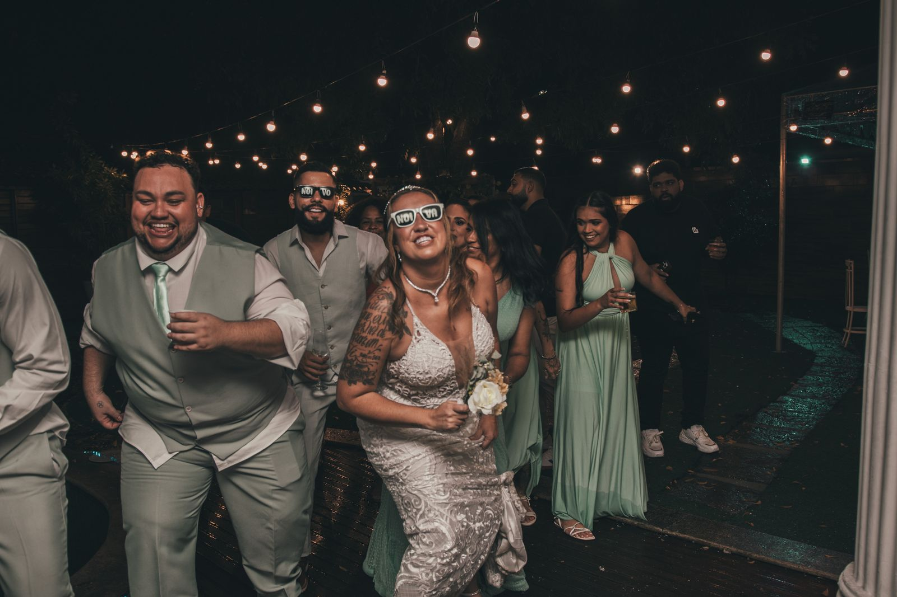
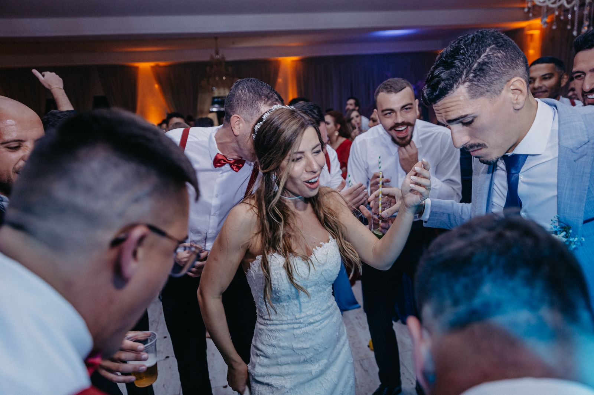
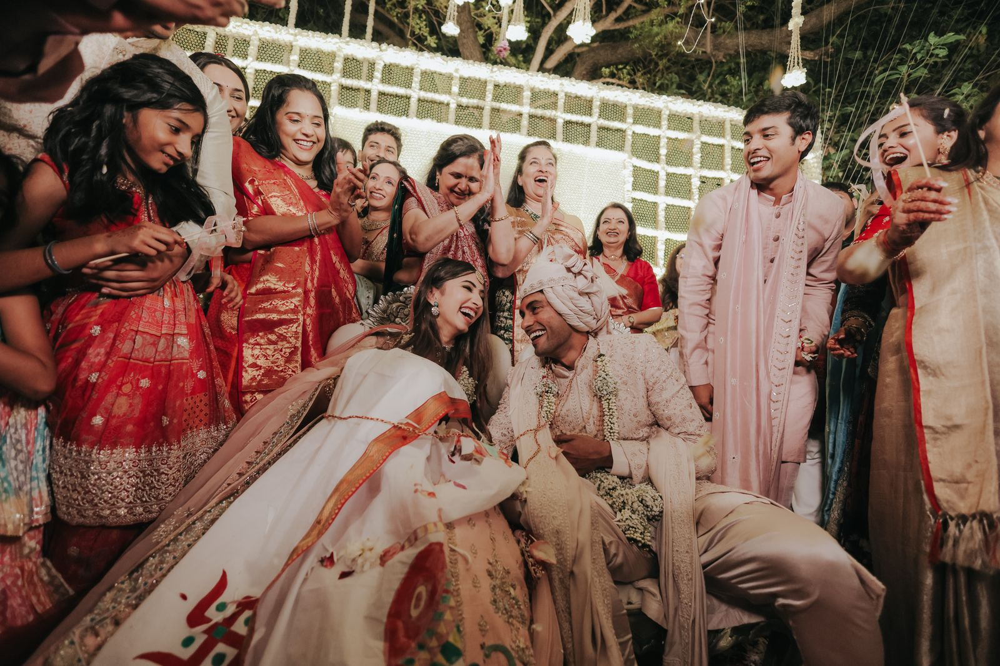
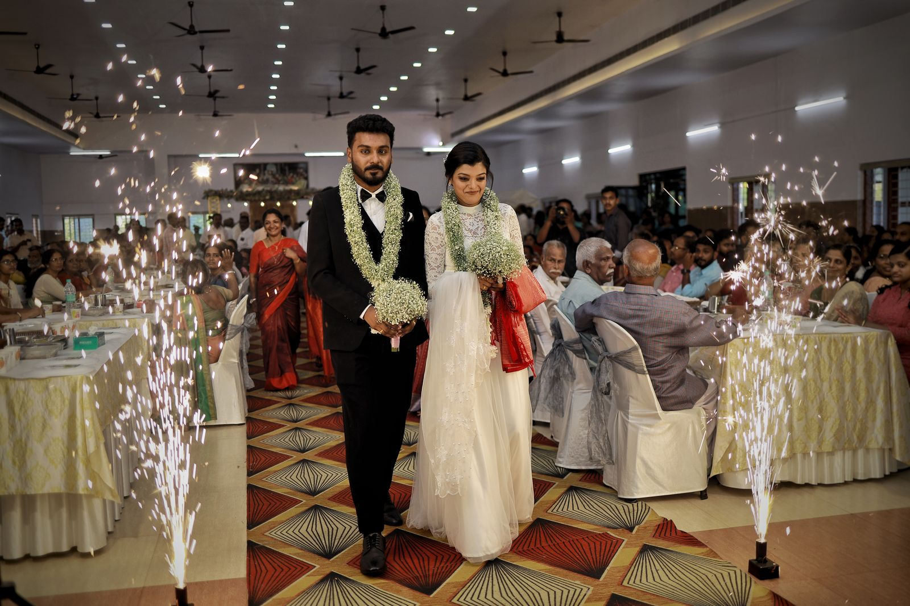

The ceremony
A day with your people
The rituals and familiar faces.
Honest wedding photographs and films, shaped around the people, traditions and little in-between moments that make your celebration yours.
We notice the familiar faces, the soft pauses and the joyful commotion, building a visual story that feels like your day all over again.
View the portfolio ↗
The rituals and familiar faces.

A little room to be yourselves.

We offer gentle guidance when it helps and step back when the real moments begin. The result is a collection that feels warm, personal and unforced.
A connected team for the celebrations, portraits and memories you want to keep.

A relaxed portrait session with room to explore, laugh and feel at ease together.
Explore sessions ↗
Family, friends and meaningful rituals captured with a gentle documentary eye.
Explore photography ↗
A beautiful, sound-rich film that brings back the voices and atmosphere of your celebration.
Explore films ↗Demonstration testimonial: replace with a genuine client review before launch.
“Every photograph brought back a feeling, a voice, a little moment we had almost forgotten. We felt the day all over again.”

It is the embraces, the happy chaos, the people who made the day yours. We preserve the feeling around the big moments, too.
Share what you are planning and we will help create coverage that feels like you.